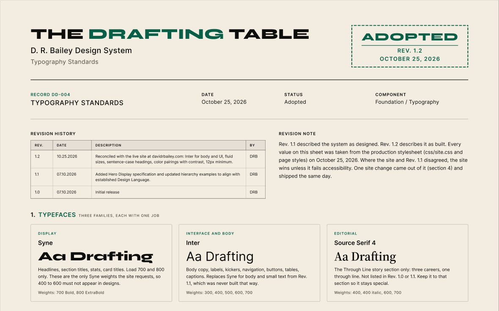
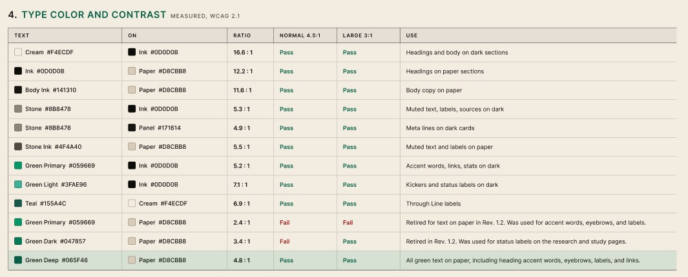
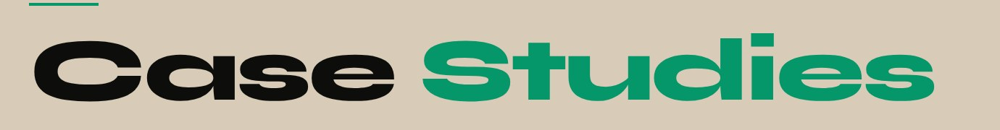
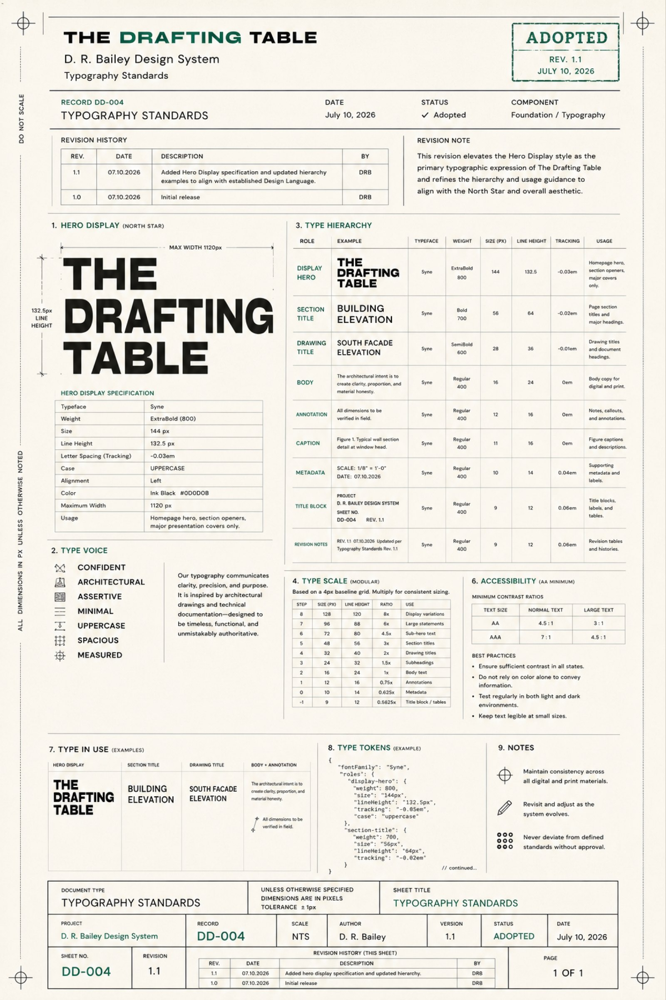
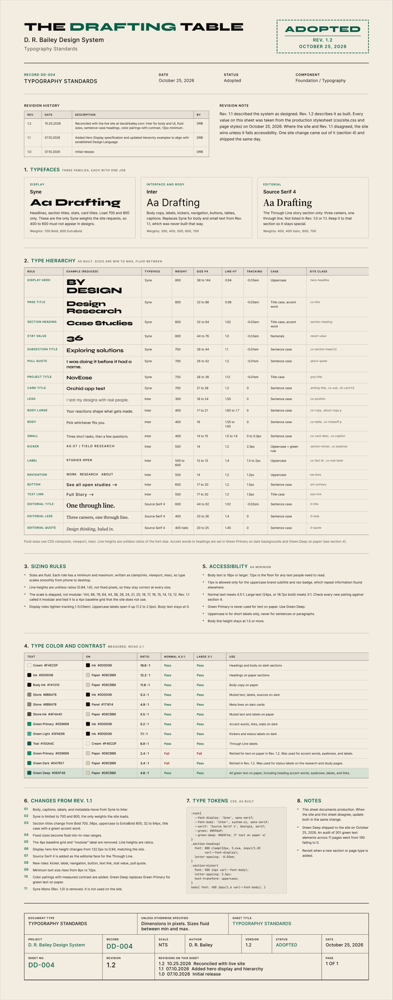

Case Study 006 · Design Systems
Auditing my own design system
The Drafting Table Design System
I designed a system, built my portfolio from it, then checked whether the two still matched. They didn't. This is what I found and what I fixed.

- Role
- Designer, developer, and system owner
- Timeline
- July to October 2026
- Tools
- Figma, VS Code, GitHub, Netlify, Claude
- Outcome
- Rev 1.2 adopted. 190 failing green text elements brought to WCAG AA.
Starting Point
In July 2026 I documented the typography for my portfolio brand, The Drafting Table, as record DD-004. I styled it like an architectural drawing sheet, with a title block, a revision history, and an adoption stamp. Rev 1.0 and Rev 1.1 went out the same day.
I chose the drafting sheet because it shows how I work. Titles, revisions, annotations, and status stamps carry real information, the way they do on a construction set. I wasn't sold on the blueprint idea at first, but presenting the system as a coordinated drawing set won me over. I kept the palette tight, with no reds or blues, so status and hierarchy come from stamps, type, line weights, and spacing. For display type I picked Syne because it felt architectural.
Then I built the site by hand in VS Code and deployed it through GitHub and Netlify. Over the next three months it kept growing: new case studies, a research section, participant study pages. The sheet stayed at Rev 1.1.
The sheet stopped describing the site
A design system only helps if it describes what is actually built. If a hiring manager opens my typography sheet, then opens my site and sees different fonts, the sheet works against me.
Make the sheet tell the truth
Bring the sheet in line with the site, and fix the site anywhere the sheet was right.
Research
The site and the sheet disagreed in seven areas, and my signature green failed accessibility on every paper section.
I compared every typography rule in the production stylesheet against Rev 1.1, role by role. Then I measured the contrast of every text and background pairing the site uses.
| Area | Rev 1.1 said | The site does |
|---|---|---|
| Body text | Syne | Inter |
| Syne weights | 400 to 800 | Only 700 and 800 are loaded |
| Section titles | Bold 700, 56px, uppercase | ExtraBold 800, 32 to 64px, title case with a green accent word |
| Sizing | Fixed sizes on a 4px baseline grid | Fluid min-to-max sizes, line heights as ratios |
| Typefaces | Syne and Syne Mono | Syne, Inter, and Source Serif 4 |
| Smallest text | 9px | 11px, almost all 12px or larger |
| Color | Ink on cream only | Cream on dark, ink on paper, three greens |
The sheet also disagreed with itself. Its type scale listed different sizes than its own hierarchy table, and it called the scale modular when the steps were uneven.
My own brand green measured 2.4:1 on the paper background. AA asks for 4.5:1.
WCAG AA asks for 4.5:1 for normal text and 3:1 for large text, so Green Primary (#059669) on paper failed both. An automated check of every green text element across 11 pages found 190 of 301 failing, including the "Studies" in "Case Studies" on my homepage.


Exploring Solutions
I set one rule before changing anything:
The site wins, unless it fails accessibility.
I could change the site to match the sheet, or change the sheet to match the site. The site had been used across real screens for three months, and switching body text back to Syne would have made it harder to read. So the sheet changed, except where the site was the thing that failed.
Fixing the green
I looked at four options for green text on paper.
| Option | Contrast on paper | Result |
|---|---|---|
| Keep Green Primary #059669 | 2.4:1 | Fails all text |
| Use Green Dark #047857, already on some pages | 3.4:1 | Passes large text only |
| Use a new Green Deep #065F46 | 4.8:1 | Passes all text |
| Drop green on paper sections | Not applicable | Passes, but loses the accent |
I chose Green Deep, on paper only. On dark sections, Green Primary measures 5.2:1 and stays as it is, so the brand still reads as the same green.

Change the token, not the rules
The green was set in dozens of separate rules. Instead of editing each one, I changed what the color token means inside paper sections. Any new paper section picks up the right green without anyone remembering to.
Rebuild the sheet as live text
Rev 1.0 and 1.1 were flat images. I rebuilt Rev 1.2 as editable text in Figma, using the file's existing color variables, so the next revision is an edit instead of a redraw.
Final Design
Rev 1.2 was adopted on October 25, 2026, the same day the green fix shipped to the site.




What Rev 1.2 documents
- Three typefaces, each with one job: Syne for display, Inter for body and interface, Source Serif 4 for the Through Line story section.
- 20 type roles as built, each mapped to the CSS class that uses it.
- Sizing rules for fluid type, with the 4px grid and modular-scale claims removed.
- A contrast table for every text and background pairing, with measured ratios.
- A 12px minimum for any text people need to read.
- An 11-item log of what changed from Rev 1.1, and why.
Results
0
Green text elements failing WCAG AA, down from 190 across 11 pages
20
Type roles documented, up from 9
3
Typefaces documented, all in use (was 2, one unused)
What I learned
- A system records decisions, but the code is where they actually land. The two drifted apart quietly, one reasonable change at a time.
- I had treated my own brand color as settled. Measuring it showed it failed on every paper section.
- Writing the rule first, "the site wins unless it fails accessibility," made dozens of small decisions fast.
What's next
- Turn the Rev 1.2 roles into Figma text styles, so designs in the file use the same values the site does.
- Audit the other DD records in the system the same way.
- Re-run the contrast check whenever a new section or page type ships.